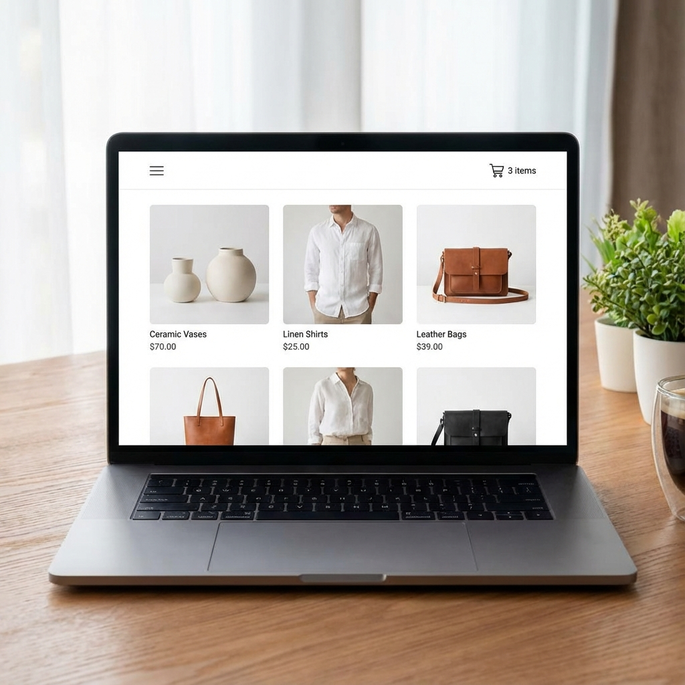
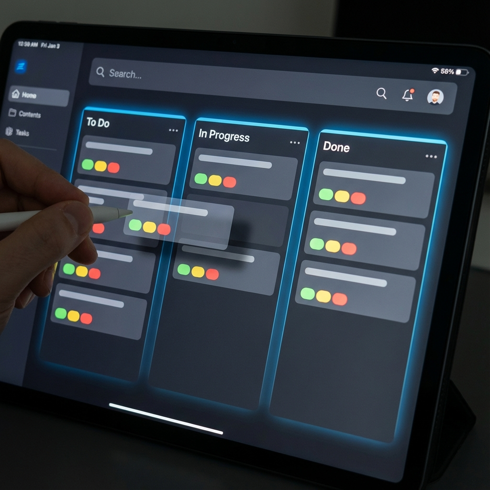

Halo, saya Full Stack Developer yang berfokus pada aplikasi web yang aman dan scalable. Saya mengubah masalah kompleks menjadi solusi digital yang elegan.

Toko online lengkap dengan fitur keranjang belanja, pembayaran digital, dan manajemen inventaris.

Alat produktivitas tim dengan papan kanban drag-and-drop, update real-time, dan analitik.